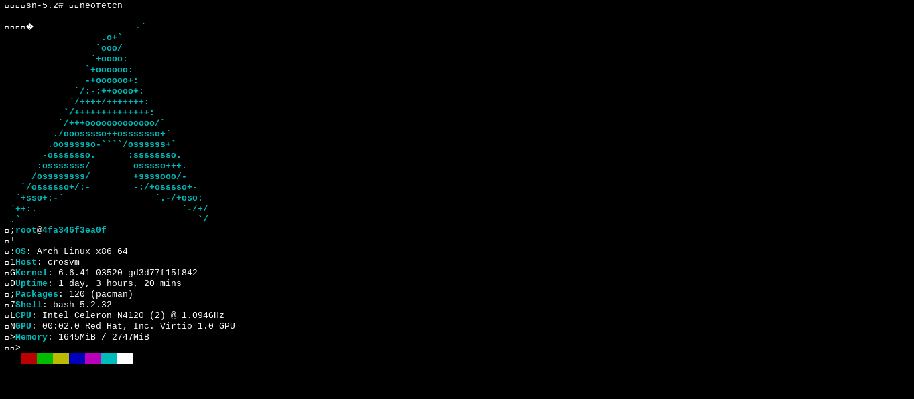

About Berm
Empowering developers with secure, browser-based terminal virtualization powered by Docker.

Our Mission
At Berm, we strive to make powerful terminal environments accessible to anyone, anywhere. With Berm, developers can instantly launch secure virtual terminals directly in their browsers, eliminating the need for complex local setups. Our mission is to simplify workflows while maintaining security and efficiency.

How Berm Works
Berm utilizes the power of Docker and WebSocket technology to create secure, isolated terminal environments. Whether you’re debugging code, managing infrastructure, or running tests, Berm ensures you have a robust and responsive terminal at your fingertips. Simply open your browser, log in, and start working.